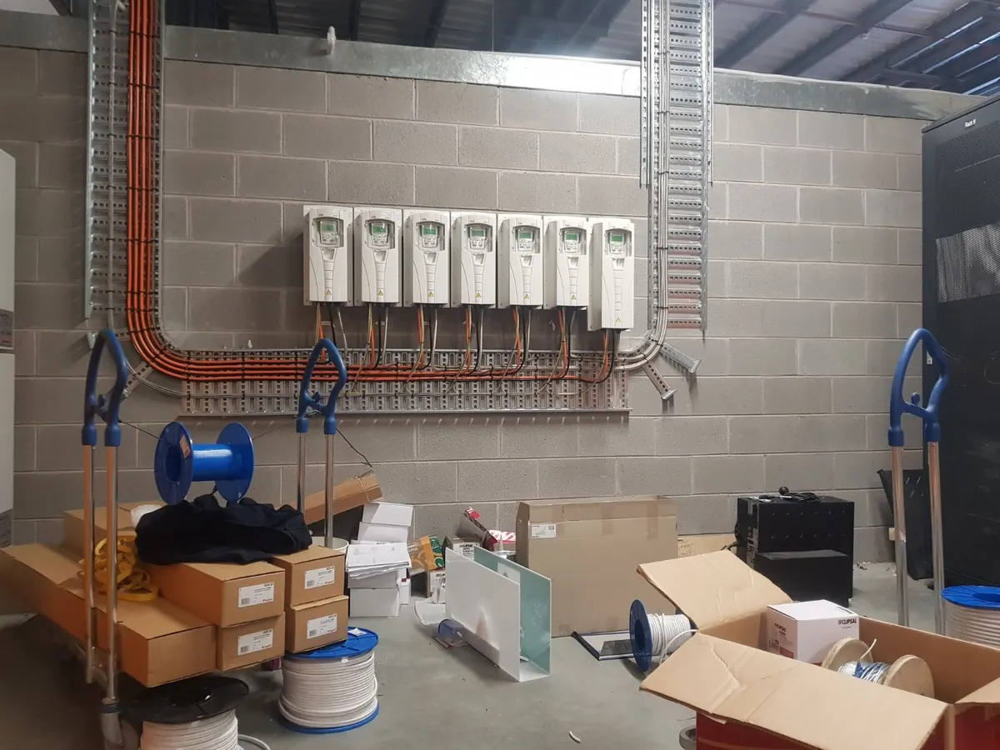
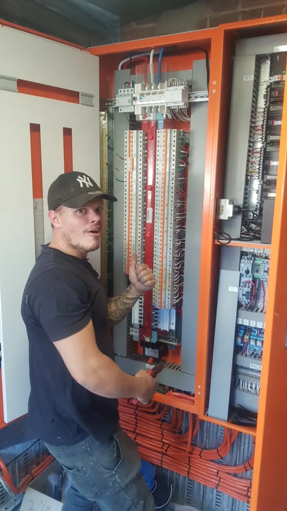

Industrial electrical services.
Industrial fault finding, motor controls, pumps, switchboards and electrical maintenance across Byron Bay and the Northern Rivers.
NSW Electrical Contractor Licence 202700C. Site access, scope, equipment and availability are confirmed before scheduling.
Practical electrical support for plant and equipment.
Industrial sites need reliable diagnosis, clear communication and sensible planning around operations. The exact scope is assessed against equipment, site conditions and applicable safety requirements.
Motors and drives
Electrical investigations around motors, variable-speed drives, associated supplies and control equipment.
Pumps and control circuits
Fault finding around pump equipment, controls, isolators, run indicators and electrical protection.
Switchboards and distribution
Assessments of industrial electrical supplies, protection, distribution and proposed alterations.
Intermittent electrical faults
Systematic diagnosis where symptoms come and go or where an equipment problem has an uncertain cause.
Maintenance and upgrades
Planned electrical maintenance, modifications and upgrade discussions to suit operating requirements.
Commercial and industrial sites
Support for workshops, plant rooms, commercial facilities and other premises with specialist electrical equipment.
Electrical controls and equipment from our archive.
These genuine photographs show the type of electrical equipment behind real technical work. No invented client projects or claimed outcomes.



Tell us what the equipment is doing.
The equipment symptoms, previous attempts at repair and operational constraints help establish the next sensible diagnostic step.
Useful details
Equipment type, fault symptoms, site suburb, operating times, recent changes and safe photos of accessible nameplates or labels.
Safety and access
Identify any access, permit, shutdown or isolation requirements. Only authorised people should access electrical equipment.
Need industrial electrical help?
Send a short summary of the plant or equipment issue, your location and a suitable contact number. We'll discuss whether the work is within scope and the next step.
Enquiries are not confirmed bookings. For immediate danger, keep clear and contact emergency services.
More ways we can help.
Commercial electrical
Maintenance, lighting, power and switchboard requirements in business premises.
Commercial services →Fault finding
Diagnose unexpected trips, dead circuits and intermittent electrical problems.
Fault finding →Switchboard upgrades
Assess electrical protection, capacity and the condition of switchboard equipment.
Switchboard services →Pump controls and electrical automation
We have a dedicated page for fault finding around pump control panels, motor starters, duty/standby controls and relevant telemetry wiring.